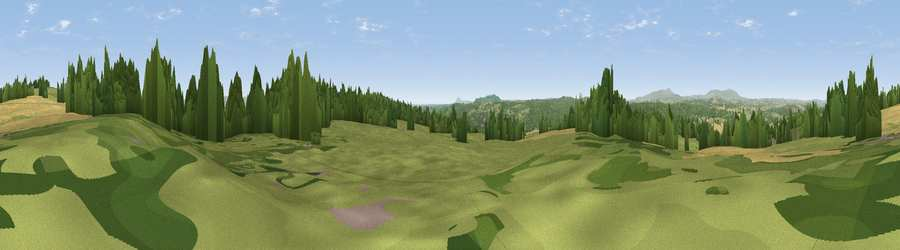

Viewpoint near Upper Arley
#11057 in England · top 17% of its area beats it · near Upper ArleyThe view, rendered

A 360° render of this exact spot computed from the terrain model, tree cover and land cover — summer colours, afternoon light, calibrated against photographs of famous viewpoints. Real trees, hedges and buildings will differ in detail.
The panorama
Grey silhouette: terrain skyline in each direction (720 bearings, Earth curvature and refraction included). Dashed green: skyline with trees (+15 m) and buildings (+8 m) as obstacles. Blue strip: how far the ground is visible on each bearing.
Where the view opens
Wedge length = distance to the farthest visible ground on that bearing (vegetation-aware). Rings at 10, 25 and 50 km.
What fills the view
44% grassland · 34% woodland · 20% cropland · 2% built-up
Angular shares of the visible panorama (visual magnitude), not map area. Landscape diversity 0.49 (0–1 Shannon).
Key numbers
More beautiful places nearby
The staircase of upgrades: each row has a higher view potential than everything closer. Driving times are estimates from straight-line distance, calibrated against real road routing — check an actual route before setting out.
| Place | Direction | Drive | Score |
|---|---|---|---|
| Viewpoint near Ferndale | SSE · 1 km | ~4 min | 71.7 |
| Viewpoint near Enville | NNE · 7 km | ~14 min | 73.1 |
| Knowle Hill | WNW · 10 km | ~19 min | 75.5 |
| Viewpoint near Abberley | SSW · 12 km | ~22 min | 77.5 |
| Abberley Hill | SSW · 12 km | ~23 min | 80.4 |
| Woodbury Hill | SSW · 15 km | ~27 min | 81.6 |
| Viewpoint near Great Witley | SSW · 15 km | ~27 min | 83.4 |
| Titterstone Clee | W · 20 km | ~33 min | 83.8 |
52.40657, -2.31269 · source: screening · position refined by local search. Computed location — check access rights before visiting.